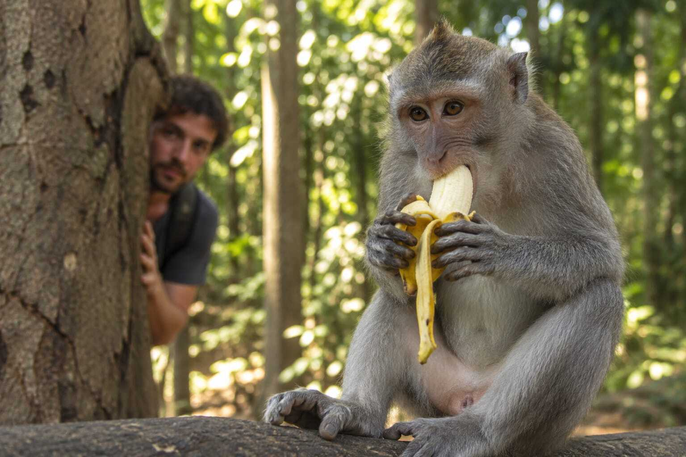

Enfim, o "robô" conseguiu!
Por: Eduardo Garcia
Finalmente acabou a espera!!! Portugal ganha a final da Copa do Mundo em cima da Argentina por 3 a 2, com hat trick perfeito de Cristiano Ronaldo.
Será que os jogadores conhecem o Six Seven?
Por: Eduardo Garcia
Finalmente acabou a espera!!! Portugal ganha a final da Copa do Mundo em cima da Argentina por 3 a 2, com hat trick perfeito de Cristiano Ronaldo.

Por: Eduardo Garcia
Segundo pesquisa feita na última quarta-feira, humanos comem mais bananas do que macacos. Em média anual, os humanos comem 100 bilhões de bananas e apenas 3 macacos .